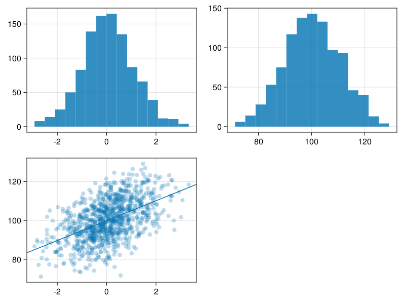

using Faux # for data simulation (under development!)
using DataFrames # for data wrangling
using CairoMakie # for plots
using GLM # to calculate regression lines (why doesn't Makie do this?)
using Statistics
import Random
rng = Random.seed!(8675309); # make randomness predictable :)
Random.TaskLocalRNG()
By default, sim_design() gives you a data frame with n = 100 observations of a single normally distributed variable called y, with mean = 0 and sd = 1. Here, we will simulate smaller n to make tables easier to see.
df = sim_design(n = 5)
| 1 | id1 | 0.70632 |
| 2 | id2 | -0.366571 |
| 3 | id3 | -0.180916 |
| 4 | id4 | -0.684639 |
| 5 | id5 | -0.275842 |
You can change the name of the dependent variable or the id column.
df = sim_design(n = 5, dv = "score", id = "subj")
| 1 | subj1 | 0.46199 |
| 2 | subj2 | 0.527764 |
| 3 | subj3 | 1.66803 |
| 4 | subj4 | -0.112542 |
| 5 | subj5 | 0.421035 |
You can add between-subject variables.
b = ["pet" => ["dog", "cat"]]
df = sim_design(n = 3, between = b)
| 1 | id1 | dog | -1.10909 |
| 2 | id2 | dog | 0.167813 |
| 3 | id3 | dog | -0.623059 |
| 4 | id4 | cat | 0.0341544 |
| 5 | id5 | cat | 1.23148 |
| 6 | id6 | cat | -0.480946 |
And within-subject variables.
w = ["cond" => ["ctl", "exp"]]
df = sim_design(n = 3, within = w)
| 1 | id1 | -0.0078768 | 0.310653 |
| 2 | id2 | 1.04838 | -1.33857 |
| 3 | id3 | 0.937878 | 1.34539 |
You can return a long version of your data.
df = sim_design(n = 3, within = w, long = true)
| 1 | id1 | ctl | 0.322081 |
| 2 | id2 | ctl | 1.01367 |
| 3 | id3 | ctl | -0.526296 |
| 4 | id1 | exp | -0.552148 |
| 5 | id2 | exp | -0.625933 |
| 6 | id3 | exp | 0.890368 |
Set the means, standard deviations, and correlations. Set empirical = true to set the sample parameters, rather than the population parameters.
b = ["pet" => ["dog", "cat"]]
w = ["cond" => ["ctl", "exp1", "exp2"]]
mu = Dict("dog" => Dict("ctl" => 10, "exp1" => 20, "exp2" => 30),
"cat" => Dict("ctl" => 40, "exp1" => 50, "exp2" => 60))
sd = Dict("cat" => Dict("exp1" => 5, "exp2" => 6, "ctl" => 4),
"dog" => Dict("ctl" => 1, "exp1" => 2, "exp2" => 3))
r = Dict("dog" => [.1, .2, .3],
"cat" => [.4, .5, .6])
df = sim_design(n = 5, within = w, between = b,
mu = mu, sd = sd, r = r,
empirical = true)
| 1 | id01 | dog | 9.49981 | 17.1466 | 27.2636 |
| 2 | id02 | dog | 9.77781 | 22.0335 | 26.7213 |
| 3 | id03 | dog | 8.76653 | 20.8465 | 33.002 |
| 4 | id04 | dog | 11.3428 | 21.2126 | 32.9576 |
| 5 | id05 | dog | 10.613 | 18.7608 | 30.0555 |
| 6 | id06 | cat | 40.6515 | 52.9525 | 59.6213 |
| 7 | id07 | cat | 44.7142 | 54.7053 | 61.7551 |
| 8 | id08 | cat | 42.7929 | 47.1345 | 65.6898 |
| 9 | id09 | cat | 35.5535 | 52.5761 | 62.9258 |
| 10 | id10 | cat | 36.2879 | 42.6315 | 50.0079 |
dogs = filter(row -> row.pet == "dog", df)
get_params(dogs)
| 1 | ctl | 1.0 | 0.1 | 0.2 | 10.0 | 1.0 |
| 2 | exp1 | 0.1 | 1.0 | 0.3 | 20.0 | 2.0 |
| 3 | exp2 | 0.2 | 0.3 | 1.0 | 30.0 | 3.0 |
cats = filter(row -> row.pet == "cat", df)
get_params(cats)
| 1 | ctl | 1.0 | 0.4 | 0.5 | 40.0 | 4.0 |
| 2 | exp1 | 0.4 | 1.0 | 0.6 | 50.0 | 5.0 |
| 3 | exp2 | 0.5 | 0.6 | 1.0 | 60.0 | 6.0 |
df = sim_design(n = 1000,
within = ["axis" => ["x", "y"]],
mu = [0, 100],
sd = [1, 10],
r = 0.5);
# ugh, I want ggplot2 :(
f = Figure()
hist(f[1,1], df.x)
hist(f[1,2], df.y)
scatter(f[2,1],df.x, df.y, alpha = 0.25)
m = GLM.lm(@formula(y ~ x), df)
ablines!(f[2,1], coef(m)...)
f
Add the rep argument to simulate multiple repeats.
df = sim_design(between = ["cond" => ["ctl", "exp"]],
mu = [0, 0.25], rep = 1000, long = true)
Use a split-apply-combine pattern to run an analysis. First, define an analyss fucntion that takes a data frame as the only argument, and returns a data frame of analysis values.
# define an analysis function
function analysis(df)
m = lm(@formula(y ~ cond), df)
stats = coeftable(m)
return DataFrame(stats)
end
# test the analysis function
analysis(df)
| 1 | (Intercept) | 0.001444 | 0.00315873 | 0.457144 | 0.647568 | -0.00474704 | 0.00763503 |
| 2 | cond: exp | 0.24797 | 0.00446712 | 55.5099 | 0.0 | 0.239214 | 0.256725 |
Split the data by rep, run the analysis on each rep, and calculate summary stats like mean coefficient or power.
# split the data by rep
df_grp = groupby(df, :rep)
# run the analysis on each rep
analyses = combine(df_grp, analysis)
# calculate summary stats by factor
combine(groupby(analyses, :Name),
x -> (
power = mean(x[!, 6] .< 0.05),
mean_coef = mean(x[!, 3]),
sd_coef = std(x[!, 3])
)
)
| 1 | (Intercept) | 0.047 | 0.001444 | 0.0973973 |
| 2 | cond: exp | 0.411 | 0.24797 | 0.141287 |